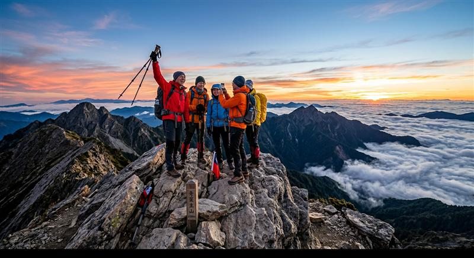

玉山主峰路線全攻略：申請、行程與注意事項

台灣第一高峰的經典路線怎麼走？從入山證申請、排雲山莊床位到攻頂時間安排，一篇整理給你。
玉山主峰是許多山友的第一座百岳，也是台灣最具代表性的登山路線之一。全程約 8.5 公里單程，從塔塔加登山口出發，大部分山友會分兩天完成：第一天走到排雲山莊住宿，第二天摸黑攻頂看日出。
入山與床位申請
- 入山證：需向玉山國家公園申請，旺季（4-10月）建議提前一個月以上申請，熱門日期常常秒殺。
- 排雲山莊床位：採電腦抽籤或搶名額制，建議關注官方公告時程，提早準備好隊員資料。
- 若沒有申請到床位，也可以選擇一日單攻，但需要充足的體力與更早的出發時間。
行程安排建議
- 第一天：塔塔加登山口 → 排雲山莊（約 4-6 小時），沿途經過孟祿亭、白木林等景點，坡度平緩好走。
- 第二天凌晨：排雲山莊 → 玉山主峰（約 2-2.5 小時），摸黑出發才能趕上日出，務必攜帶頭燈與保暖衣物。
- 下山後可直接原路返回塔塔加，當天結束行程。
裝備與注意事項
- 高山早晚溫差大，即使夏天山頂也可能接近零度，務必攜帶羽絨衣或保暖中層。
- 排雲山莊沒有插座與訊號，行動電源與離線地圖要先準備好。
- 山屋餐食需另外預訂，或自備輕量行動糧。
- 建議安排在天氣穩定的季節，雨季或颱風前後山區容易起濃霧、落石風險提高。
玉山主峰難度中等，只要行前準備充足，大多數有健行基礎的人都能順利完成。攻頂那一刻看到雲海與日出，絕對值得這一路的辛苦。